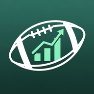

Lineup LabPick the app your league lives in. We'll walk you through it.
Use the app or the website, whichever you're signed in to.
Commissioner only: League → Settings → Basic Settings, turn on Make League Viewable to Public. Not the commish? Send them this step.
It looks like fantasy.espn.com/football/league?leagueId=8423117. The number alone works too.